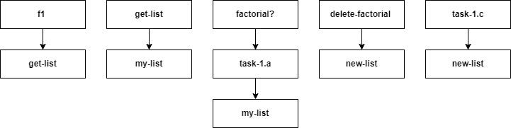
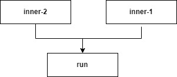
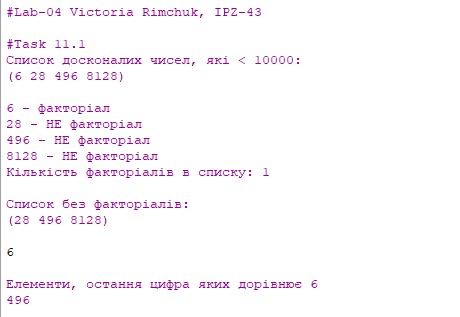
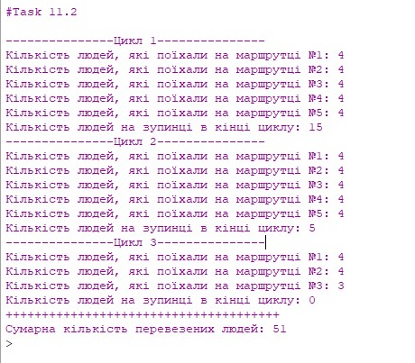
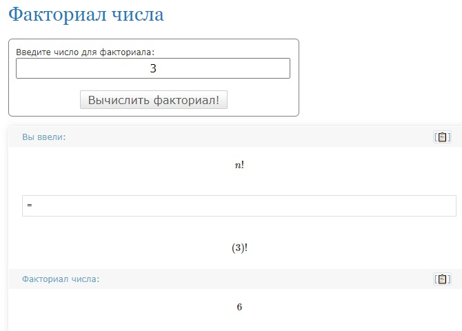
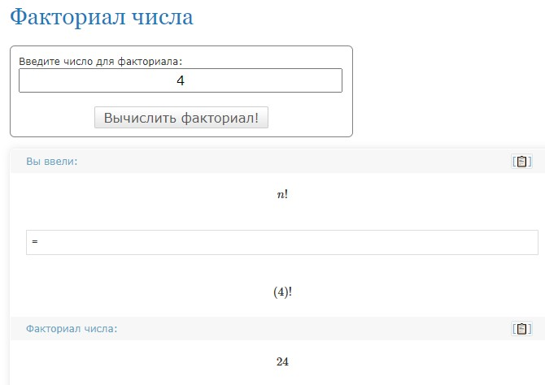
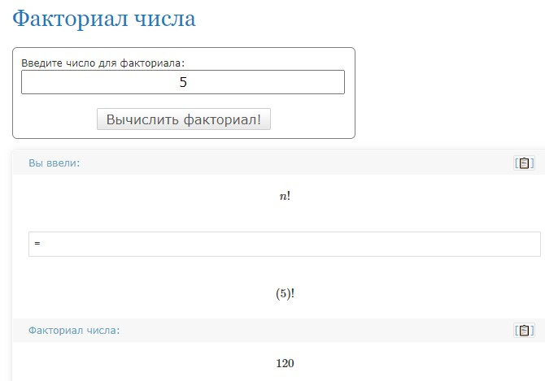
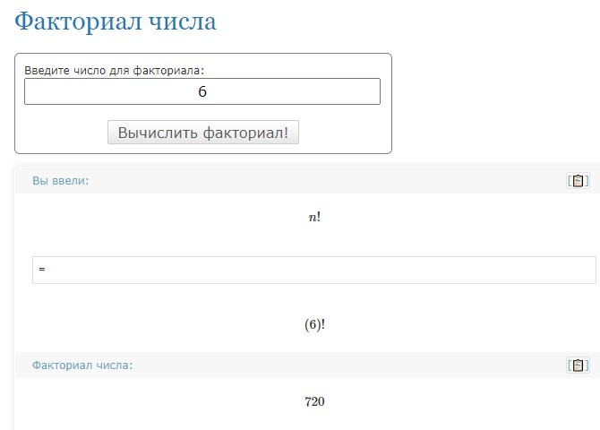
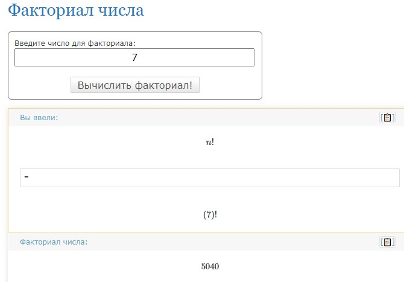
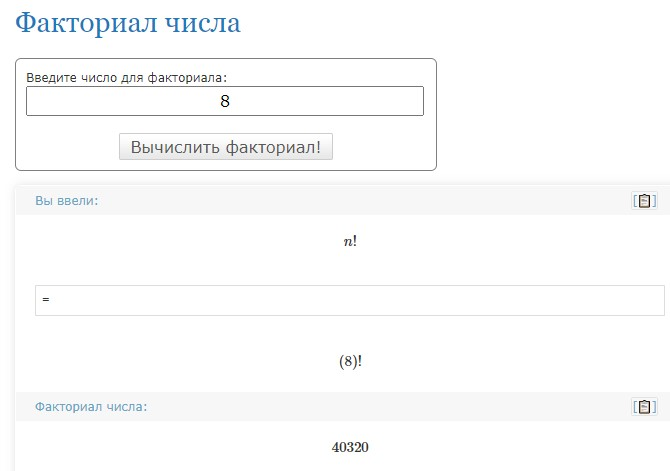

Лабораторна робота №4
Тема: Програмування списків мовами функціонального програмування
Завдання:
11.1.Створити список досконалих натуральних чисел, задавши максимальне значення числа (10000). Досконале число – це натуральне число, яке дорівнює сумі всіх своїх дільників. Вивести створений список. Виконати такі операції:
a) Визначити елементи списку, які є факторіалами чисел, та підрахувати їх кількість;
b) Видалити елементи списку, які є факторіалом числа;
c) Знайти елементи, остання цифра яких дорівнює n (задається користувачем).
11.2Написати код, що моделює процес обслуговування пасажирів маршрутками. Пасажири утворюють список, їх ідентифікація за порядковими номерами. У маршрутку можуть увійти k людей. На маршруті m машин. Машини прибувають на зупинки кожні n хвилин. Черга пасажирів зменшується на k людей, коли прибуває маршрутка, але протягом чекання наступної машини збільшується на p<=k людей. Вивести на екран сценарій обслуговування пасажирів маршрутками. Визначити, скільки людей перевезуть m маршруток за r циклів роботи
Опис алгоритму для завдання 11.1:
1. Створюємо функцію, яка рахує суму дільників числа
2. Створюємо функцію my-list, в яку передаємо в якості аргумента функцію get-list 10000
3. Виводимо рехультат роботи функції my-list на екран
4. Створюємо функцію, яка визначає елементи в списку, які є факторіалами числа та підраховує їх кількість
5. Виводимо результуючий список на екран
6. Створюємо функцію, яка видаляє елементи списку, які не є факторіалами чисел
7. Виводимо на екран новий список без факторіалів
8. Створюємо функцію, яка знаходить елементи, остання цифра яких = введеному користувачем числу
9. Виводимо результат на екран
Опис алгоритму для завдання 11.2:
1. Задаємо початкові значення для:
* кількості людей, які входять в маршрутку (k);
* кількості нових людей, які приходять на зупинку (p);
* кількості маршруток (m);
* часу між двома маршрутками (n);
* кількості циклів (r);
2. Задаємо початкову кількість людей на зупинці
3. Втановлюємо початкову кількість перевезених людей = 0
4. Створюємо функцію run, яка запускає процес перевезення пасажирів маршрутками згідно заданих вхідних даних
5. В кожному із заданих циклів виводимо на екран кількість людей, які поїхали на кожній маршрутці та кількість людей на зупинці в кінці циклу
6. Виводимо на екран сумарну кількість перевезених людей
Структура програми (HIPPO діаграма):
Task 11.1
Task 11.2
Обгрунтування вибору середовища та мови
В якості середовища було обрано DrRacket версії 8.2 та мова Racket
Вибір середовища та мови був зумовлений наступним:
Код програми:
(display "\n#Lab-04 Victoria Rimchuk, IPZ-43")
(newline)
(newline)
;#Task 11.1
; Функція, яка рахує суму дільників числа
(define (f1 num)
(define (inner sum temp)
(if (< temp num)
(inner (if (= (modulo num temp) 0)
(+ sum temp)
sum)
(+ temp 1))
sum))
(inner 0 1))
(define (get-list n)
(define (inner temp)
(if (<= temp n)
(append (if (= (f1 temp) temp)
(list temp)
'())
(inner (+ 1 temp)))
'()))
(inner 1))
(display "#Task 11.1")
(newline)
(display "Список досконалих чисел, які < 10000:\n")
(define my-list (get-list 10000))
(display my-list) (newline) (newline)
;a) Визначити елементи списку, які є факторіалами чисел, та підрахувати їх кількість
(define (factorial? x)
(define (inner sum count)
(if (> sum x)
#f
(if (= sum x)
#t
(inner (* sum count) (+ 1 count)))))
(inner 1 2))
(define (task-1.a arr count)
(if (not (null? arr))
(if (factorial? (car arr))
(begin
(display (car arr))
(display " - факторіал\n")
(task-1.a (cdr arr) (+ count 1)))
(begin
(display (car arr))
(display " - НЕ факторіал\n")
(task-1.a (cdr arr) count)))
(begin
(display "Кількість факторіалів в списку: ")
(display count)
(newline))))
(task-1.a my-list 0)
; b) Видалити елементи списку, які є факторіалом числа;
(define (delete-factorial arr)
(if (not (null? arr))
(append (if (factorial? (car arr))
'()
(list (car arr)))
(delete-factorial (cdr arr)))
'()))
(define new-list (delete-factorial my-list)) ; новий список без факторіалів
(display "\nСписок без факторіалів:\n")
(display new-list) (newline)
; c) Знайти елементи, остання цифра яких дорівнює n (задається користувачем).
(define (task-1.c arr x)
(if (not (null? arr))
(begin
(if (= (modulo (car arr) 10) x)
(begin
(display (car arr))
(newline)))
(task-1.c (cdr arr) x))))
(newline)
(define x (read))
(display "\nEлементи, остання цифра яких дорівнює ")
(display x) (newline)
(task-1.c new-list x) (newline)
;#Task 11.2
(define k 4) ; кількість, людей які входять в маршрутку
(define p 2) ; кількість нових людей, які приходять на зупинку
(define m 5) ; кількість маршруток
(define n 10) ; час між двома маршрутками
(define r 3) ; кількість циклів
(define count 25) ; початкова кількість людей на зупинці
(define total 0) ; кількість перевезених людей
(display "#Task 11.2")
(newline)
(define (run)
(define (inner-2 mt)
(if (and (<= mt m)
(> count 0))
(let ((kt (if (< (+ p count) k) (+ p count) k)))
(set! count (+ (- count kt) p))
(set! total (+ kt total))
(display "Кількість людей, які поїхали на маршрутці №")
(display mt)
(display ": ")
(display kt)
(newline)
(inner-2 (+ 1 mt)))
(begin
(display "Кількість людей на зупинці в кінці циклу: ")
(display count))))
(define (inner-1 rt)
(if (and (<= rt r)
(> count 0))
(begin
(display "\n---------------Цикл ")
(display rt)
(display "---------------\n")
(inner-2 1)
(inner-1 (+ rt 1)))
(begin
(display "\n++++++++++++++++++++++++++++++++++++++\n")
(display "Сумарна кількість перевезених людей: ")
(display total)
(newline))))
(inner-1 1))
(run)
Скріншот результатів:

Аналіз достовірності результатів:
11.1 Для перевірки достовірності отриманих результатів (перевірки того, чи є число факторіалом) було використоно онлайн калькулятор, результати перевірки представлені нижче:






В результаті аналізу достовірності було встановлено, що із списку досконалих чисел, які менші 10000 факторіалом є лише число 6
Число 28 не є факторіалом, оскільки для числа 4 факторіал =24, а для числа 5 - 120.
Число 496 не є факторіалом, оскільки для числа 5 факторіал =120, а для числа 6 - 720.
Число 8128 не є факторіалом, оскільки для числа 7 факторіал =5040, а для числа 8 - 40320.
11.2 Для даного завдання, перевірку на достовірність було проведено за допомогою візуальної оцінки списку після кожної дій над ним. На мою думку, дане завдання не потребує додаткових перевірок на достовірність.
Висновки:
В ході виконання даної лабораторної роботи було опановано теоретичні основи використання списків функціональними мовами та розроблено програми для обробки списків